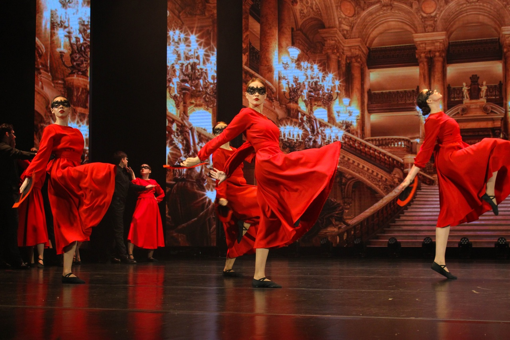
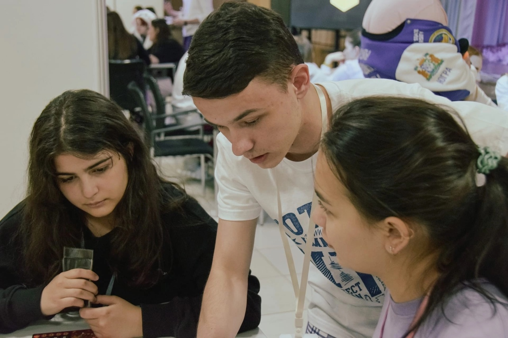
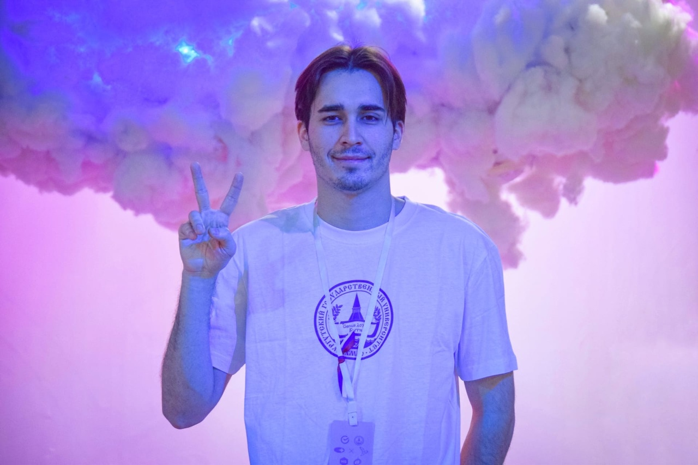

  
| Актив - место, где каждый студент может почувствовать себя нужным, да и ещё проводить время не только весело, но и с пользой, ведь существует масса мероприятий абсолютно разной направленности |
Первый курс - лучшее время, когда активист может проявить себя, например в первом семестре, нас встречают именно творческие мероприятия, при чем студент может выбрать любое из представленных направлений, чтобы проявить себя.
Первое и основное мероприятие - это «дебют первокурсника», старшие курсы выступают в форме наставников и помогают первым курсам в подготовке, куча репетиций и приятных воспоминаний, а уже на сцене то самое волнение, которое ни с чем не сравнить! Мода, Художественное слово, Танцы, Квн и конечно же Вокал!
Ещё из основных мероприятий в первой половине учебы - это
«Фнк» - фестиваль на котором, каждый институт представляет свой народ и погружает в его культуру всех желающих
Большое количество не особо крупных мероприятий, но которые тоже находят свое место в стенах университета, литературные квизы, что где когда, золотой микрофон, множество форумов и тд
«НВУ» - ночь в университете, вообще одно из самых ожидаемых мероприятий, студенты проходят квесты, слушают интересных спикеров, а главное, проводят целую ночь в стенах универа!
Студ весна - мероприятие, которое для некоторых выходит за рамки только университета, творчество-творчество и ещё раз творчество, но теперь уже без наставников в виде старших курсов, как на дебюте
«Недетский утренник» это уже зимнее мероприятие, где за лучший новогодний костюм ребята получают призы, незабываемо и атмосферно!
В целом, актив - это не просто про студенчество, это про дружбу и насыщенную жизнь!